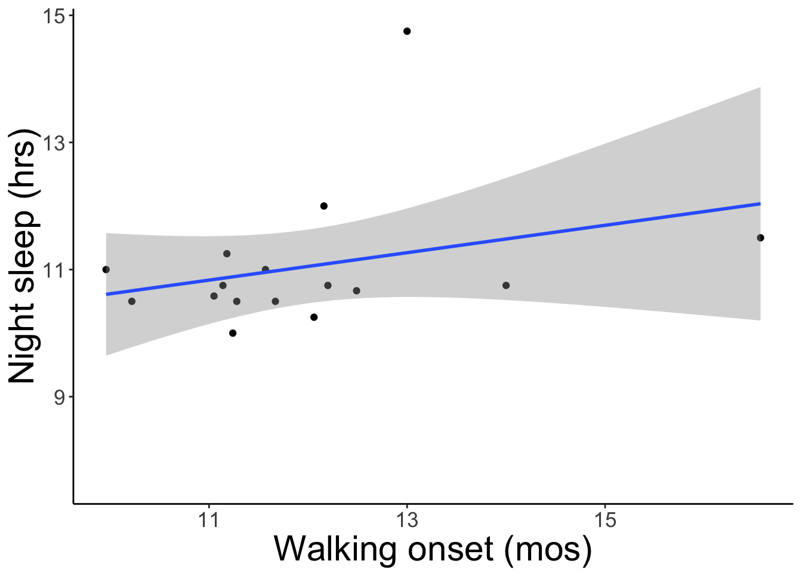
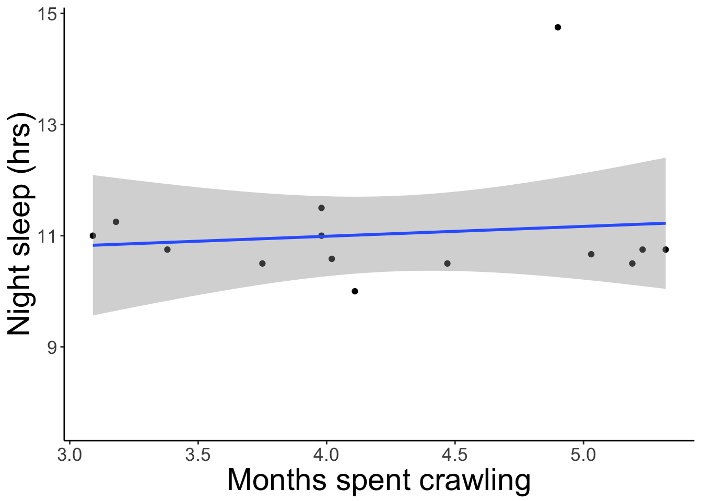
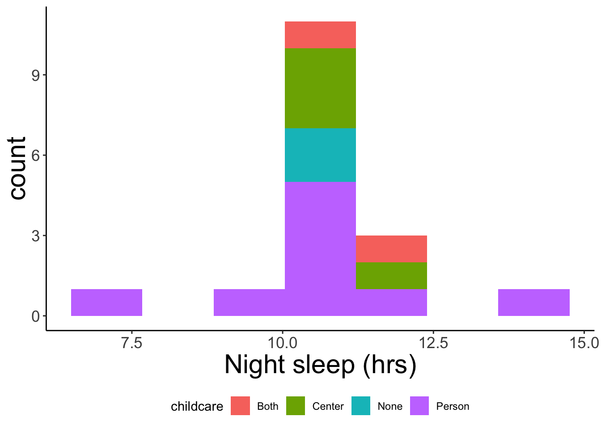

Using the PLAY project pilot data, compare a child’s sleeping patterns with the age they began crawling and walking and their method of childcare.
To see if there is a correlation between number of hours of sleep a child gets at night, their method of childcare and the amount of time they went from crawling to walking
Import data from a csv file stored in walk-sleep_data/.
data_dir <- 'walk-sleep_data/'
walk_sleep <- read_csv('walk-sleep_data/walk-sleep.csv')## Parsed with column specification:
## cols(
## ID = col_double(),
## crawl_mos = col_character(),
## walk_mos = col_double(),
## X = col_double(),
## to_sleep = col_time(format = ""),
## awake = col_time(format = ""),
## sleep_hrs = col_time(format = ""),
## childcare = col_character()
## )We need to make sure that crawl_mos, and sleep_hrs are numbers.
walk_sleep$crawl_mos <- as.numeric(walk_sleep$crawl_mos)## Warning: NAs introduced by coercionwalk_sleep$sleep_hrs <- lubridate::hms(walk_sleep$sleep_hrs)We will define some common graph theme elements here.
my_theme <- theme(axis.text.x = element_text(size = rel(1.5)),
axis.text.y = element_text(size = rel(1.5)),
plot.title = element_text(size = rel(3)),
axis.title = element_text(size = rel(2)),
legend.text = element_text(size = rel(2))) +
theme_classic()Hours of night sleep by age at walk onset.
walk_sleep %>%
ggplot() +
aes(x = walk_mos, y = as.numeric(sleep_hrs, "hours")) +
geom_point() +
geom_smooth(method='lm', formula = y ~ x) +
xlab('Walking onset (mos)') +
ylab('Night sleep (hrs)') +
my_theme## Warning: Removed 1 rows containing non-finite values (stat_smooth).## Warning: Removed 1 rows containing missing values (geom_point).
Let’s also look at the total time spent crawling as a predictor. We’ll define a new variable, mos_crawling to do this.
walk_sleep <- walk_sleep %>%
mutate(mos_crawling = walk_mos - crawl_mos)
walk_sleep## # A tibble: 17 x 9
## ID crawl_mos walk_mos X to_sleep awake sleep_hrs childcare
## <dbl> <dbl> <dbl> <dbl> <time> <tim> <S4: Peri> <chr>
## 1 2 7.53 11.3 3.75 20:30 07:00 10H 30M 0S Person
## 2 3 7.03 11.0 4.02 20:45 07:20 10H 35M 0S Center
## 3 5 8.48 11.6 3.09 19:30 06:30 11H 0M 0S Both
## 4 6 12.6 16.6 3.98 19:45 07:15 11H 30M 0S Center
## 5 7 7.2 11.7 4.47 20:30 07:00 10H 30M 0S None
## 6 9 8.1 13 4.9 16:00 06:45 14H 45M 0S Person
## 7 10 8 11.2 3.18 18:15 05:30 11H 15M 0S Both
## 8 11 NA 12.1 NA 18:45 05:00 10H 15M 0S Person
## 9 12 7.46 12.5 5.03 19:20 06:00 10H 40M 0S Center
## 10 13 7.76 11.1 3.38 19:00 05:45 10H 45M 0S Person
## 11 14 NA 12.2 NA 19:00 07:00 12H 0M 0S Person
## 12 15 7.13 11.2 4.11 20:00 06:00 10H 0M 0S Person
## 13 16 5.03 10.2 5.19 19:30 06:00 10H 30M 0S None
## 14 17 5.98 9.96 3.98 20:30 07:30 11H 0M 0S Person
## 15 18 8.68 14 5.32 18:45 05:30 10H 45M 0S Center
## 16 19 6.97 12.2 5.23 19:30 06:15 10H 45M 0S Person
## 17 20 8.97 NA NA 19:20 03:00 7H 40M 0S Person
## # … with 1 more variable: mos_crawling <dbl>We don’t have data for all participants here, so the sample is smaller.
walk_sleep %>%
ggplot() +
aes(x = mos_crawling, y = as.numeric(sleep_hrs, "hours")) +
geom_point() +
geom_smooth(method='lm', formula = y ~ x) +
xlab('Months spent crawling') +
ylab('Night sleep (hrs)') +
my_theme## Warning: Removed 3 rows containing non-finite values (stat_smooth).## Warning: Removed 3 rows containing missing values (geom_point).
walk_sleep %>%
ggplot() +
aes(x = as.numeric(sleep_hrs, "hours"), fill = childcare) +
geom_histogram(bins = 7) +
xlab('Night sleep (hrs)') +
my_theme +
theme(legend.position = 'bottom')
We test the association between sleep_hrs and walk_mos with a Pearson’s product-moment correlation.
c <- with(walk_sleep, cor.test(as.numeric(sleep_hrs), walk_mos))
c##
## Pearson's product-moment correlation
##
## data: as.numeric(sleep_hrs) and walk_mos
## t = 1.2158, df = 14, p-value = 0.2441
## alternative hypothesis: true correlation is not equal to 0
## 95 percent confidence interval:
## -0.2204330 0.6978418
## sample estimates:
## cor
## 0.3090412We find that there is a correlation of \(r\)=0.3090412 but the 95% confidence interval of [-0.220433, 0.6978418] includes 0, so we cannot infer a relationship.
We also fit a linear regression line to these data. The sleep_hrs variable must be made numeric before we do so.
lr <- lm(formula = as.numeric(sleep_hrs) ~ walk_mos, data = walk_sleep)
summary(lr)##
## Call:
## lm(formula = as.numeric(sleep_hrs) ~ walk_mos, data = walk_sleep)
##
## Residuals:
## Min 1Q Median 3Q Max
## -3188.9 -1801.2 -1087.8 455.6 12544.8
##
## Coefficients:
## Estimate Std. Error t value Pr(>|t|)
## (Intercept) 30463.3 7715.2 3.948 0.00146 **
## walk_mos 776.3 638.5 1.216 0.24415
## ---
## Signif. codes: 0 '***' 0.001 '**' 0.01 '*' 0.05 '.' 0.1 ' ' 1
##
## Residual standard error: 3896 on 14 degrees of freedom
## (1 observation deleted due to missingness)
## Multiple R-squared: 0.09551, Adjusted R-squared: 0.0309
## F-statistic: 1.478 on 1 and 14 DF, p-value: 0.2441Again, there is an expected non-zero value for the intercept, but no statistically signficant relationship between sleep_hrs and walk_mos.